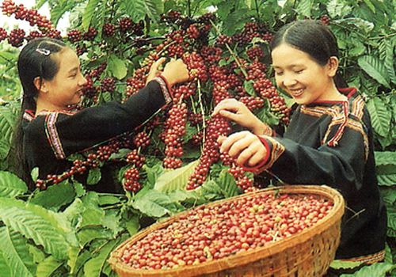

Cà phê Buôn Ma Thuột
Cà phê Buôn Ma Thuột là thương hiệu nổi tiếng không chỉ trong nước mà còn trên thế giới. Với hương vị đậm đà, cà phê Đắk Lắk được trồng trên đất bazan màu mỡ, tạo nên chất lượng đặc trưng.

Ẩm thực truyền thống
Ẩm thực Đắk Lắk mang đậm hương vị núi rừng với các món như cơm lam, gà nướng Bản Đôn, canh lá rừng. Những món ăn này phản ánh lối sống giản dị và gần gũi thiên nhiên.
Giá trị văn hóa ẩm thực
Ẩm thực không chỉ để thưởng thức mà còn là nét văn hóa đặc sắc, gắn liền với lễ hội và sinh hoạt cộng đồng của người dân Tây Nguyên.